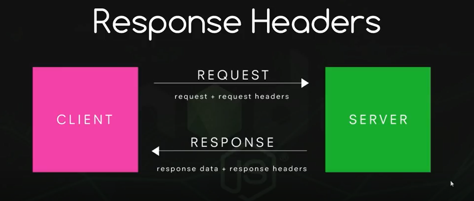
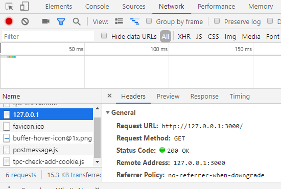

2.3 Servidores y ficheros¶
Crear un servidor http¶
Una aplicación cliente que realiza una petición a un servidor, que a su vez envía una respuesta, se comunica con el mismo a través de protocolos: reglas predefinidas para establecer comunicaciones a través de sockets, que son un canal de comunicación mediante TCP o puertos UDP. Cada protocolo de capa de aplicación TCP/IP realiza una función: transmisión de información web, transferencia de archivos, correo electrónico, etc.
La información adicional se envía a través de encabezados.

Por ejemplo, en la respuesta, el servidor le dice al cliente el tipo de contenido que envía para saber qué hacer con él, un navegador mostrará la información html como una página web pero no se mostrará un archivo de texto o json. El estado del envío también aparece en los encabezados de respuesta: 200 si todo correcto, error 404, etc.
En Node podemos crear servidores http usando el módulo http.
Para crearlo contamos con el método createServer de este módulo, que toma como parámetro una función a su vez con dos parámetros, uno que almacena la petición realizada y otro la respuesta.
Vamos a especificar el encabezado de respuesta donde diremos que se envía texto sin formato y crearemos el texto en sí. También es necesario definir un puerto y la IP, usaremos el puerto 3000 y la IP 127.0.0.1 que es la dirección local.
| http_server.js | |
|---|---|
Para probarlo, ejecutamos el archivo con node y abrimos un navegador en la dirección http://127.0.0.1:3000/.
Si queremos ver los detalles en el navegador, podemos usar la herramienta de desarrollador, en la pestaña de red, y veremos la respuesta del servidor.

Si agregamos cualquier palabra o ruta después del puerto, aún obtendremos la misma respuesta del mismo texto sin formato. Para verlo mejor, agregamos una línea a la función createServer para ver la url que envía la solicitud:
Aprenderemos a controlar la respuesta con diferentes urls por enrutamiento.
Sirviendo JSON¶
JSON es una forma de escribir los datos con notación javascript: https://www.w3schools.com/js/js_json_intro.asp
https://developer.mozilla.org/es/docs/Learn/JavaScript/Objects/JSON
Es ampliamente utilizado para enviar datos entre servidores y clientes. Por ello, debemos aprender a enviarlos desde nuestro servidor de nodos.
Lo primero es cambiar el tipo de datos que enviamos. También creamos un objeto JSON simple y podemos pensar en hacer algo como esto:
Una solicitud JSON puede provenir de algún código javascript que la crea y luego muestra los datos de cierta manera en el front-end de una página web.
Lo habitual es trabajar con archivos JSON. Podemos combinar los modos asíncrono/sincróno que vimos anteriormente con los métodos que vemos ahora.
Leer un archivo JSON¶
Método 1: Usar el método require: El método más simple para leer un archivo JSON es requerirlo en un archivo Node.js usando el método require().
Sintaxis:
Ejemplo: Crear un archivo users.json en el mismo directorio donde está presente el archivo index.js.
[
{
"name": "John",
"age": 21,
"languages": [
"JavaScript",
"PHP",
"Python"
]
},
{
"name": "Smith",
"age": 25,
"languages": [
"PHP",
"Go",
"JavaScript"
]
}
]
Para leer el archivo users.json en el archivo index.js usando el método require().
Método 2: Usando el módulo fs: También podemos usar el módulo fs de Node.js para leer un archivo. El módulo fs devuelve el contenido de un archivo en formato de cadena, por lo que debemos convertirlo a formato JSON utilizando el método integrado JSON.parse().
Ejemplo:
| index.js | |
|---|---|
Escribir un archivo JSON¶
Para escribir un archivo JSON, usamos el método fs.writeFile() del módulo fs.
Sintaxis:
Ejemplo. Agregar un nuevo usuario al archivo users.json existente, creado anteriormente. Esta tarea se completará en tres pasos: